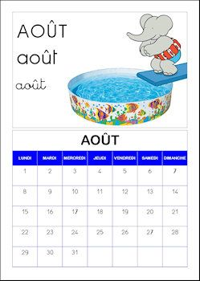
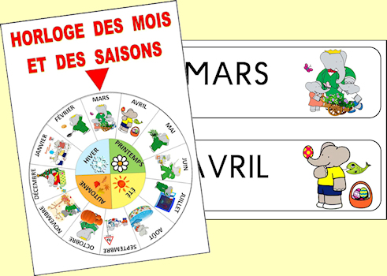
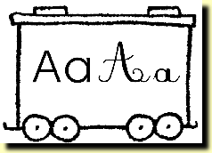
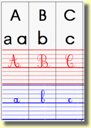
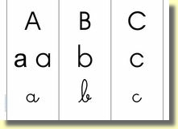

: Babar : mois illustrés avec le personnage de Cécile et Jean de Brunhoff
: Babar : mois illustrés avec le personnage de Cécile et Jean de Brunhoff
 : Babar - calendrier 2022-2023
: Babar - calendrier 2023-2024 (2 Mo)
: Babar - calendrier 2022-2023
: Babar - calendrier 2023-2024 (2 Mo)

: Babar - horloge des mois et des saisons
: Babar - petites étiquettes des mois
: Mois illustrés par Babar à colorier
: Alphabet sonore (format HTML - 1406 Ko)

: Alphabet 1 (train de l') (1 document - 4 lettres par wagon)
: Alphabet 1 A4 (train de l') (1 document - 4 lettres par wagon - toutes les lettres sur une page A4)
: Alphabet 2 (train de l') (1 document - 2 lettres par wagon)
: Alphabet 2 A4 (train de l') (1 document - 2 lettres par wagon - toutes les lettres sur une page A4)

: à colorier (1 lettre par page A4)
Fichier Abécédaire ter (1 lettre par page A4)
Fichier Abécédaire quatro (1 lettre par page A4)
: Alphabet sonore (format HTML)

: à colorier (1 lettre par page A4)
Fichier Abécédaire ter (1 lettre par page A4)
Fichier Abécédaire quatro (1 lettre par page A4)
: Alphabet sonore (format HTML)
